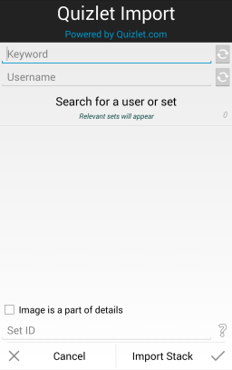

Importing Sets
Introduction
Quizlet and StudyStack integration allows you to import sets directly
from 3rd party websites into
Stacks. Importing can be done in one of two ways; searching or using the Set ID.

Importing Sets
- Searching: Type a keyword or a username into the appropriate field and wait for the
results to load. When the correct set is found, tap the item, and tap "Import Stack". The
stack will be downloaded (along with any images) and added to your collection.
- Set ID: Using a browser, navigate to the set. The address of the page will be
of the format "quizlet.com/xxxxxxx/*set name*" for quizlet sets. xxxxxxx is a number of any
length, that is
the Set ID. Input the ID into the Quizlet window and tap "Import Stack".